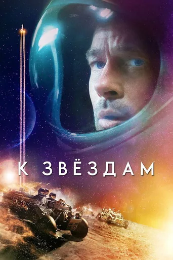

К звёздам 2019
Недалёкое будущее. Несколько лет назад человечество запустило программу поиска внеземной жизни «Проект «Лима»», во главе которой стоял капитан Клиффорд Макбрайд. Последний сигнал экспедиции был зафиксирован в районе Нептуна, и с тех пор о её судьбе ничего не было известно. Сам капитан Макбрайд стал героем и самым известным космонавтом, вдохновившим многих на исследование космоса. Через 16 лет после исчезновения «Проекта «Лима»» на Земле начинают происходить странные вспышки энергии, выводящие из строя электросистемы и сеящие хаос и разрушения. По данным американского космического агентства сигнал идёт с Нептуна, и теперь сыну знаменитого космонавта, майору Рою Макбрайду, поручается ответственная миссия. Он должен добраться до марсианской базы и оттуда попытаться связаться с предположительно живым отцом.
Открыть в каталогеДанные и постеры принадлежат их правообладателям. Этот продукт использует TMDB API, но не одобрен и не сертифицирован TMDB.